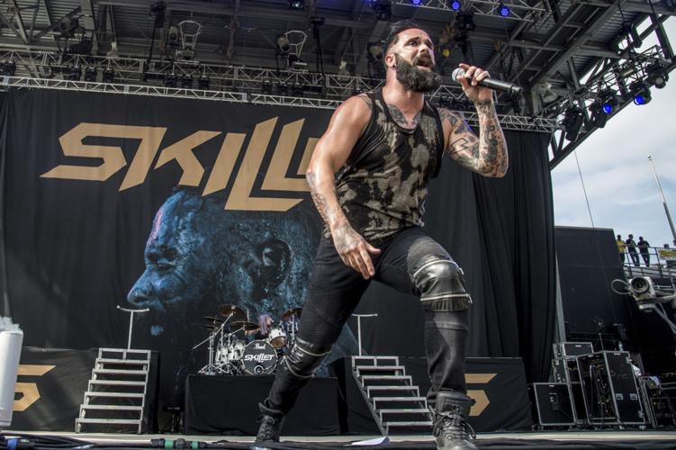
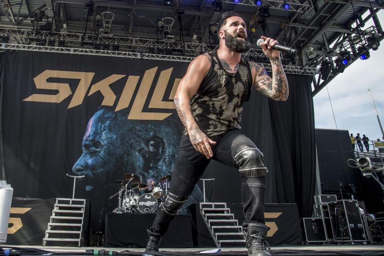

Historia de Skillet
Skillet
Skillet es una banda de rock cristiano y metal cristiano originaria de Tennessee, fundada en 1996 y conformada por John y Korey Cooper, Seth Morrison y Jen Ledger. El grupo ha publicado once álbumes de estudio, el más reciente, Dominion, en el 2022. Dos de sus discos, Collide y Comatose recibieron nominación al Grammy. El sonido de la banda se ha descrito como rock alternativo, hard rock, y rock sinfónico, y ha sido caracterizada por elementos electrónicos.
Orígenes
1996s
Skillet se formó en Memphis, Tennessee en 1996 cuando John Cooper, y Ken Steorts decidieron formar una banda; poco después, Trey McClurkin se unió a la banda como baterista. Llevaban un mes juntos cuando ForeFront Records mostró interés en ellos para lanzar su disco homónimo.
Durante 1997, Skillet compaginó su gira de presentación con la preparación del siguiente álbum, titulado Hey You, I Love Your Soul, lanzado en abril de 1998. Pronto se uniría a la formación Korey Cooper, la esposa de John, para tocar los teclados.
Poco antes de que la banda comenzara la grabación de su tercer álbum, Steorts dejó la banda y fue sustituido por Kevin Haaland. Después del lanzamiento de Invincible, Trey McClurkin dejó la banda y fue reemplazado por la baterista Lori Peters.
2000s
Con poco tiempo entre giras, Skillet grabó su quinto álbum, Alien Youth, y fue lanzado el 28 de agosto del 2001. Antes de su lanzamiento, Haaland dejó la banda y Ben Kasica se hizo cargo de la guitarra.
En 2003, Collide fue lanzado por Ardent Records. A partir de este año Korey asume la guitarra rítmica. Collide llamó la atención de Lava Records, una división de Atlantic Records, compañía que luego compraría sus derechos y lo relanzó con una canción adicional, "Open Wounds". En el 2005 el álbum recibió una nominación al Grammy.
El álbum Comatose fue lanzado el 3 de octubre de 2006 debutando en el puesto número 55 en el Billboard 200 y número 4 en la lista de música cristiana. En enero de 2008, Lori Peters se retiró de la banda y se dedicó a entrenar a su reemplazo, Jen Ledger. En octubre la banda lanzó un CD/DVD llamado Comatose Comes Alive.
Skillet entró al estudio para grabar con el productor nominado al Grammy Howard Benson. El álbum, titulado Awake, fue lanzado el 25 de agosto de 2009. Se ubicó en el puesto #2 en el Billboard Top 200, vendiendo más de 100.000 unidades en su primera semana. Skillet obtuvo tres Premios Billboard y fue nominado a seis para la 41ª entrega de Dove Awards. Comatose fue certificado Oro por RIAA el 3 de noviembre.
2010s
El 14 de febrero del 2011 Skillet anunció que Ben Kasica deja la banda, y, a partir del 16 de abril, Seth Morrison lo sustituye.
John Cooper dijo a RadioU que la banda se dirigiría al estudio en octubre del 2012 para grabar con Howard Benson. El 12 de diciembre, Awake fue certificado disco de platino por RIAA. Cooper anunció que el nuevo álbum es titulado Rise, el cual, lanzado el 25 de junio del 2013, debutó en el puesto #4 del Billboard 200, vendiendo 90.000 copias en su primera semana. Skillet tocó "Rise" el 11 de julio en Conan. La banda ganó un Dove Award por "Sick of It." En el 2014 recibieron dos nominaciones en los Premios Billboard y ganaron dos en los Dove Awards.
El 12 de julio del 2016 la RIAA anunció que Rise ha sido honrado con la certificación de oro. El 5 de agosto la banda lanzó su noveno álbum, titulado Unleashed, el cual en su primera semana vendió 80.000 copias en los Estados Unidos, ocupando el puesto #3 del Billboard Top 200.
La banda obtuvo tres nominaciones en los Premios Billboard y tres en los Dove Awards del 2017. El 17 de noviembre el grupo lanzó Unleashed Beyond, la edición de lujo del álbum.Jen Ledger inició su proyecto como solista, lanzando un EP titulado LEDGER el 12 de abril de 2018. Skillet recibió dos nominaciones en los Dove Awards 2018, de las cuales ganó una. En septiembre, John Cooper anunció su nueva banda, Fight the Fury, la cual lanzó un EP titulado Still Breathing el 26 de octubre. El 4 de diciembre Unleashed fue certificado Oro.
El 7 de mayo de 2019, Skillet lanzó "Legendary" como el primer sencillo de su décimo álbum, Victorious. El 14 de junio, la banda lanzó dos canciones: "Save Me" y "Anchor". El 27 de julio lanzaron "You Ain't Ready". El álbum fue lanzado vía Atlantic Records el 2 de agosto. El 23 de septiembre, WWE reveló que "Legendary" será el tema musical para las siguientes temporadas de RAW.
2020s
En diciembre del 2020, John Cooper lanzó su primer libro, Awake & Alive to Truth: Finding Truth in the Chaos of a Relativistic World.
El 15 de septiembre del 2021, Skillet lanzó "Surviving the Game", el primer sencillo de su undécimo álbum de estudio, Dominion, el cual fue lanzado el 14 de enero de 2022
| Nombre | Posición | Edad |
|---|---|---|
| John Cooper | voz, bajo, guitarra acústica | 48 años |
| Korey Cooper | teclados, sintetizadores, guitarra rítmica, coros | 50 años |
| Jen Ledger | batería, coros, voz | 33 años |
| Seth Morrison | guitarra principal, coros | 35 años |
Legado
Skillet es una banda de rock estadounidense que ha dejado un legado impresionante en la industria musical. Desde su formación en 1996, la banda ha cautivado a los fanáticos de todo el mundo con su energía, su estilo único y su mensaje inspirador.
Uno de los aspectos más destacados del legado de Skillet es su habilidad para fusionar diferentes géneros musicales, como el rock, el metal y el pop, creando un sonido distintivo y poderoso. Esta mezcla de estilos les ha permitido llegar a una audiencia amplia y romper barreras, ganando el reconocimiento tanto en la escena cristiana como en la música mainstream.
Pero más allá de su estilo musical, el legado de Skillet se basa en sus letras profundas y significativas. Las canciones de la banda abordan temas como la lucha interna, la superación personal, la fe y la esperanza. Sus letras resonantes han tocado los corazones de muchas personas, brindando consuelo y motivación en tiempos difíciles.
Otro aspecto fundamental de su legado es su presentación energética y apasionada en vivo. Los miembros de la banda, encabezados por el vocalista John Cooper, son conocidos por su entrega y su capacidad para conectar con la audiencia. Los conciertos de Skillet son una experiencia inolvidable, llenos de emoción y poderío musical, que deja una huella duradera en los fanáticos.
Además de su música, Skillet también ha sido un faro de esperanza y positividad en la industria musical. A través de su testimonio personal y sus mensajes en las redes sociales, han compartido su fe y su amor por los demás. Han inspirado a sus seguidores a superar obstáculos, a creer en sí mismos ya encontrar fuerza en los momentos más oscuros.
En resumen, el legado de Skillet es una combinación de música poderosa, letras significativas y un mensaje inspirador. Su habilidad para conectar con los fanáticos y tocar sus vidas de manera profunda es lo que los ha convertido en una de las bandas más destacadas de su generación. A medida que dejará huella en la industria musical, su legado perdurará y seguirá impactando a nuevas generaciones de fanáticos.
 
